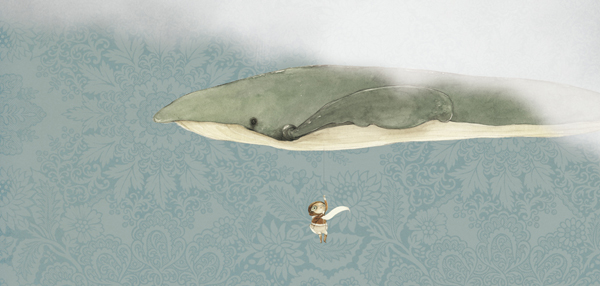

三月就要过去了，北京还像冬天一样冷。天气预报说，今天有雨夹雪，可能是太干了，还没有下起来。外面一片灰暗，这样的天气，哪里都不想去，只想待在家，上上网，听听音乐。过去我们都是在博客上分享自己喜欢的音乐，后来想，为什么不穿插在里面说点什么呢？每期节目都是一个树洞，记录下自己的生活，或者说说我们听过的音乐，看过的电影，读过的书和他们背后的故事。波兰诗人米沃什有首诗里写：“我只想成为一棵树，为岁月而生长，不伤害任何人”。这也是我们如此喜欢树的原因，那就叫两棵树的森林电台吧。从今天开始我们的电台。